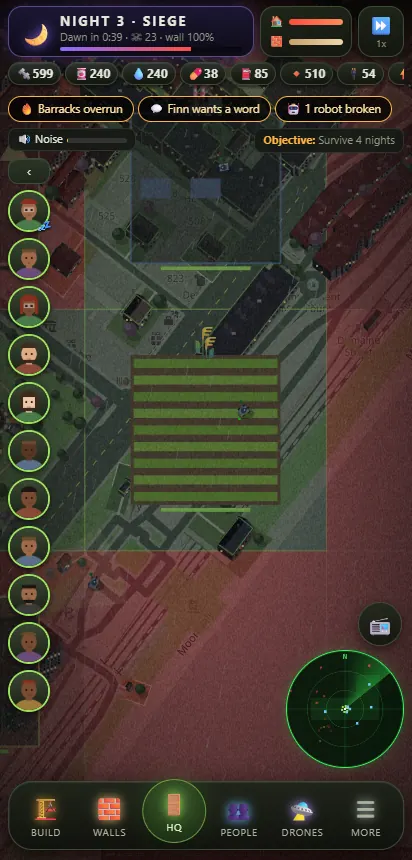
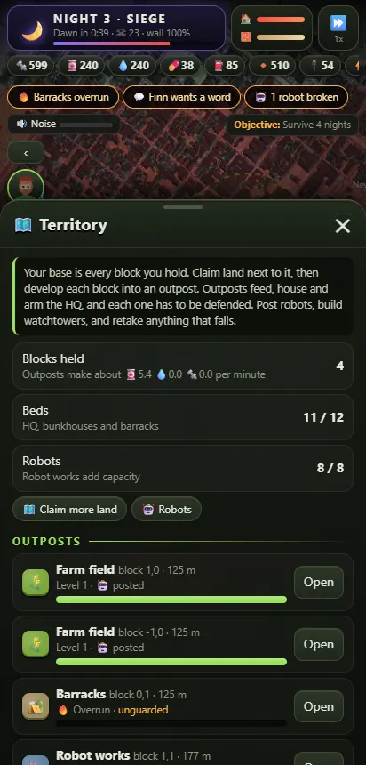
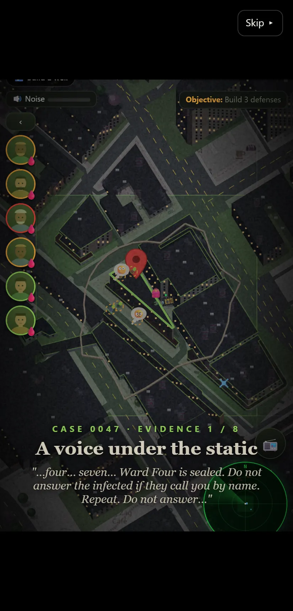
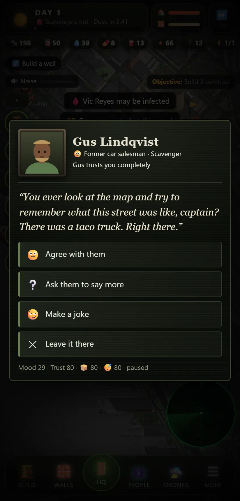

What you're up against
Dead Grid is a survival strategy game that mixes tower defense, colony management and scavenging. It runs on a map of a real place: yours, or anywhere in the United States.

Your street is the battlefield
Type an address or tap Use my current location. The game downloads that area from OpenStreetMap and looks up its 2020 Census tract.
- Real buildings become lootable homes, shops, pharmacies, gas stations and hospitals.
- Real population sets how dense the infected are. A city block plays very differently from a rural road.
- Landmarks such as hospitals, armories and depots become strongholds to capture for new weapons.
- Rival survivor groups, from friendly co-ops to hostile gangs, set up in the streets around you.

A bunker you can walk through
Tap HQ to go inside. Cinder-block walls, boarded windows, flickering lamps and the hum of the generator.
- Your survivors live here. You'll see them cooking in the mess hall, hauling crates, working the radio, repairing gear in the workshop, treating the wounded and sleeping in the bunks.
- Tap anyone to see who they are and what they're doing.
- Stations open the real panels: command table, radio set, drone bay, mess hall, armory, defense console, bunk room, workshop and med bay.
- Walk to a boarded window to watch the perimeter during a siege.

A base that spreads, and has to be held
Your HQ is just the start. Claim the blocks around it and develop each one into an outpost. Over time your base becomes a scattered collective of farms, barracks and lookouts, and every one of them is a target.
- 🌾 Farm fields grow food when a farmer or a Harvester works them. Without enough fields, extra farmers can't get anything out of the ground.
- 🏕️ Barracks add beds, so more survivors can join. 🏭 Robot works raise robot capacity and make robots cheaper.
- 🗼 Watchtowers shoot anything near the outpost. 🛢️ Cisterns and 🔩 salvage yards bring in water and scrap.
- Everything can fall. At night the dead go for your outposts as well as the HQ. A fallen outpost stops producing until your crew retakes it.
- The Territory panel (More → Territory) shows every outpost, its health, its guards and what it produces.

Robots that multiply. Gangs that spread.
- Harvesters work the fields around the clock. Wardens post themselves at your most exposed outpost and hold it.
- Post any robot to any outpost. Turn on Swarm protocol and the factory builds whatever the base needs most when supplies allow.
- Crashed drones come home on their own. The nearest free robot drops what it's doing to fetch them. If none can, the drone reboots and limps back.
- Bandit camps grow. Hostile groups set up new camps at gas stations, motels and overpasses, each one closer to you. They raid your softest outpost and steal what they can carry.
- Hit back. Tap a camp and send your combat robots in. Burn every camp a gang owns and the gang scatters for good.

Case 0047
The outbreak didn't just happen. Over your first nights, evidence turns up in eight pieces, each through a different part of the game:
- The radio: a numbers station on 3.4 MHz that only broadcasts after dark.
- Your drones: things they shouldn't have found, like a keycard from a company nobody's heard of.
- The wall: bodies your crew finds at the gate, and what's on their wrists.
- The horde: one night, every infected on the map stops and turns the same way.
- Your people: some of them saw something. They'll only tell you if they trust you.
- Everything you find goes in the Case file (More → Case 0047). The beta's story ends on a cliffhanger, and the rest arrives in later updates.

Conversations you can't predict
Talk to anyone. They start with whatever is on their mind, not a menu.
- A hidden psyche: warmth, temper, honesty, nerve, humour, faith and pride, plus a secret, a fear, something they want and someone they lost.
- Their own voice: some are blunt, some ramble, some joke when they're scared, some stutter. Many have a habit you'll come to recognise.
- Trust: every answer moves it. Trust decides whether they confess, take your advice, or tell you who's hiding a bite.
- Consequences: they might hand you supplies they've been saving, return what they stole, slip out alone on a supply run, tell someone they love them, or pack a bag and leave at dawn.
- They come to you: when someone has something on their mind, a "wants a word" alert appears.
Cutscenes and recaps
- Nightfall and dawn get a short letterboxed scene: the horde gathering, your defenses counted, a survivor's last words before the siege, and the toll at sunrise.
- Deaths and departures get their moment, with the person's face and the last thing on their mind.
- "While you were away": leave the game running and come back to a recap of what happened while you weren't watching.
- "Previously on Dead Grid": continue a save and catch up on the drama, TV-style.
- Tap to skip, or turn them off under More → Cutscenes.

Walls, guns and things that explode
Your compound is ringed by a wall made of sections. Each section wears down on its own, and your wall crew patches the weakest first.
- MG Turret, Sniper Nest, Flamer from day one. Mortar Pit, Tesla Coil and Rocket Pod unlock when you capture strongholds.
- Barricades and mines to shape where the horde goes. Floodlights give nearby towers +40% damage at night.
- Generators, well pumps and water pipes keep the lights on and the taps running.
- Upgrade the HQ itself: reinforced walls, workshop, armory, med bay, storeroom, radio tower and more.

People, not units
Every survivor has a name, a face, a job and a memory of what happened to them.
- Needs: food, water, sleep, hygiene, health and morale. Neglect one and things go wrong fast.
- Relationships: friendships form, grudges grow, and disputes land on your desk for you to settle.
- Camp rules handle the hard calls automatically: what to do with the bitten, newcomers, rationing and ammo.
- Camp orders such as burning the dead or a scrub-down keep disease and despair away.

Drones and robots
You can't be everywhere, so build machines that can.
- Air drones fly real streets to loot shops and homes. On Smart mode they fetch whatever you're about to run out of. They wear down and run on batteries.
- Sentry bot, Hauler rover and Heavy Mech fight, haul cargo, repair walls and recover crashed drones.
- Scavenged blocks get stripped bare over time, so trips get longer the longer you survive.

Everyone on the air wants something
Tune in to relays, families, pirate stations, cults and gangs.
- Missions: rescues, supply drops and trades, each with its own risk and reward.
- Trust grows with gifts and kept deals. Some callers will lie to you, and a few set traps.
- A radio tower upgrade brings more survivor signals and more block income.

Then the sun goes down
Each night is a siege, and each one is harder than the last.
- Walkers are slow, runners are fast and fragile, spitters hit from range, brutes smash walls, and tanks take everything you have.
- Noise draws them in: building, gunfire and burning bodies all make it worse.
- Bandit road gangs show up in later waves, and they shoot back.
- Seasons change, and winter makes you burn fuel just to keep people warm.